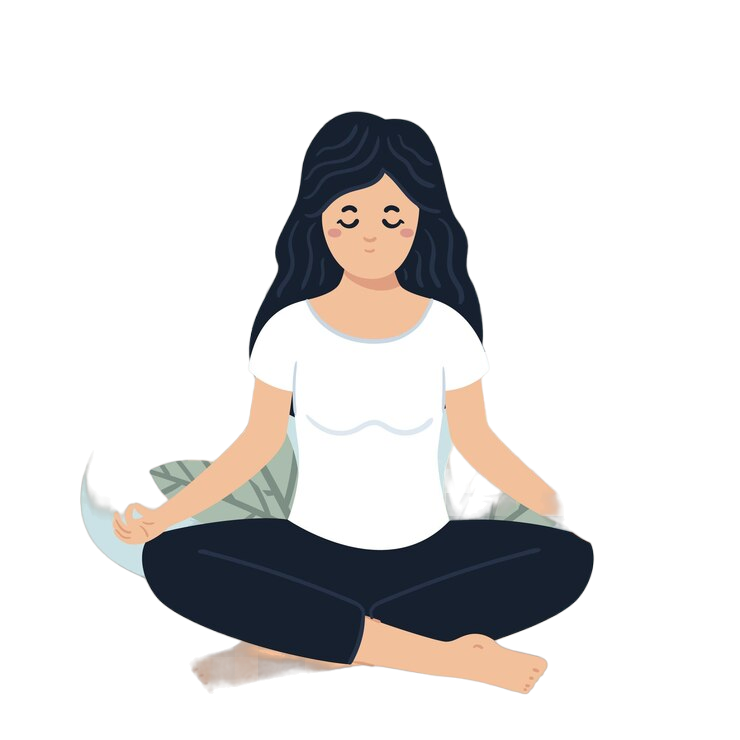
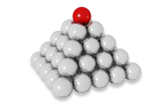

Evidence-Based Somatic & Cognitive Coping
Adaptive Coping Sanctuary
When academic pressure, exam anxiety, or panic strikes, somatic exercises immediately activate your vagus nerve to slow down your heart rate and re-center your cognitive focus. Select any proven technique below to begin.
Completed Today: 2 Sessions
Wellness Points: 180 Pts
Mindful State: Calm & Re-centered

8 Guided Coping Rituals
Explore Coping Rituals
Tap any card to launch the guided interactive exercise
Box Breathing
4-4-4-4 rhythm for instant focus and nerve regulation

4-7-8 Relaxation
Natural tranquilizer for sleep disturbance and burnout

5-4-3-2-1 Grounding
Rapidly anchor sensory awareness to break panic cycles

Alternate Nostril
Harmonize autonomic balance and restore mental clarity
Positive Affirmations
Shatter academic self-doubt with reassuring spoken affirmations

Belly Breathing
Release shallow chest breathing and deep bodily tension

8-4-7 Method
High-efficiency rhythmic sequence for acute exam panic

Backward Counting
Prefrontal cortex engagement to disengage amygdala overdrive
Box Breathing (4-4-4-4)
Inhale 4s • Hold 4s • Exhale 4s • Hold 4s
A tactical breathing method used to regain control in high-stress college exam and interview situations.
Tip: Close your eyes or softly follow the rhythm while breathing through your nose.